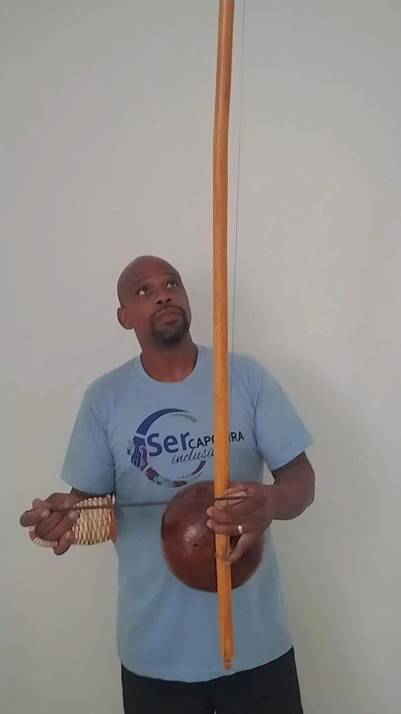

Sobre o projeto
Ser Capoeira é para todos.
Conheça a história do Ser Capoeira Inclusiva Adaptada e o Professor Dinho, responsável pelo projeto em Juiz de Fora (MG).
(01) Nossa história
Uma ferramenta de inclusão.
O Ser Capoeira nasceu para ser uma ferramenta de inclusão, promovendo a integração de crianças, jovens e adultos típicos e atípicos, pessoas com deficiência e pessoas com síndrome de Down no universo da capoeira.
Este trabalho busca quebrar paradigmas e mostrar que o acolhimento é uma palavra-chave para superar barreiras.
É fazer inclusão e proporcionar valorização, utilizando a capoeira como canal de estimulação, expressão e sensibilização.

(02) O que nos guia
O que nos guia
O acolhimento é uma palavra-chave para superar barreiras.
Acolher, desenvolver e transformar!

(03) Quem conduz
Elizomar Nascimento — Professor Dinho
Pratica capoeira há 32 anos e tem experiência em capoeira inclusiva adaptada para crianças, adolescentes e adultos.
Sua atuação é voltada à educação, à inclusão social e ao desenvolvimento motor por meio da capoeira, promovendo acessibilidade e bem-estar para pessoas com diferentes necessidades.
Desenvolve esse trabalho com conhecimento técnico e experiência na atuação com pessoas com deficiência, pessoas autistas, pessoas com TDAH e pessoas com síndrome de Down. É o fundador do Ser Capoeira Inclusiva em Juiz de Fora — MG.
(04) Experiência
Experiência profissional
Aulas adaptadas
Coordena aulas de capoeira para crianças e adultos autistas, com síndrome de Down e com outras condições.
Metodologias adaptadas
Desenvolve metodologias adaptadas para inclusão e desenvolvimento motor.
Eventos e rodas
Organiza eventos e rodas de capoeira acessíveis a todos os participantes.
Formação de instrutores
Atua na formação de novos instrutores de capoeira.
(05) Competências
Habilidades e competências
Capoeira inclusiva para crianças e adultos
Desenvolvimento de metodologias adaptadas
Trabalho com pessoas autistas, com síndrome de Down e outras condições
Organização de eventos e rodas inclusivas
Formação e capacitação de instrutores
Trabalho em equipe e liderança
Faça parte
Quer participar?
Fale com o Professor Dinho para saber como participar.